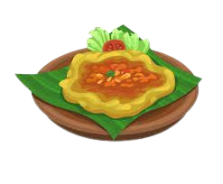

Bali
Bali memang selalu bisa memberikan pengalaman wisata yang melekat di hati para wisatawan. Tidak hanya bagi wisatawan lokal saja, begitupun juga dengan wisatawan internasional yang selalu menjadikan Bali sebagai tempat wisata untuk dikunjungi lagi dan lagi. Banyaknya pilihan pantai dan keberagaman budaya menjadi daya tarik Pulau Dewata ini. Selain karena keindahan alamnya, Bali terkenal dengan kulinernya yang enak dengan cita rasa yang pas di lidah masyarakat. Tidak komplit rasanya jika berlibur ke Bali tanpa mencoba kuliner khas Bali.
Check the foods


Popular Dishes
Sate Lilit
Daging babi cincang, ikan, ayam, dan sapi yang dililit pada bambu BaliBabi Guling
Kerupuk yang direbus, dimasak dengan racikan cabai, bawang putih, garam, dan kencur BaliLawar
Campuran sayuran, kelapa, dan daging cincang yang dicampur dengan bumbu dan rempah-rempah BaliTum Ayam
Ayam cincang dicampur rempah-rempah dan santan, dibungkus dengan daun pisang BaliTipat Cantok
Terbuat dari sayuran yang dikukus dan lontong dicampur dengan saus kacang Bali

Join Us
Join Us For
Join Us For
Updates